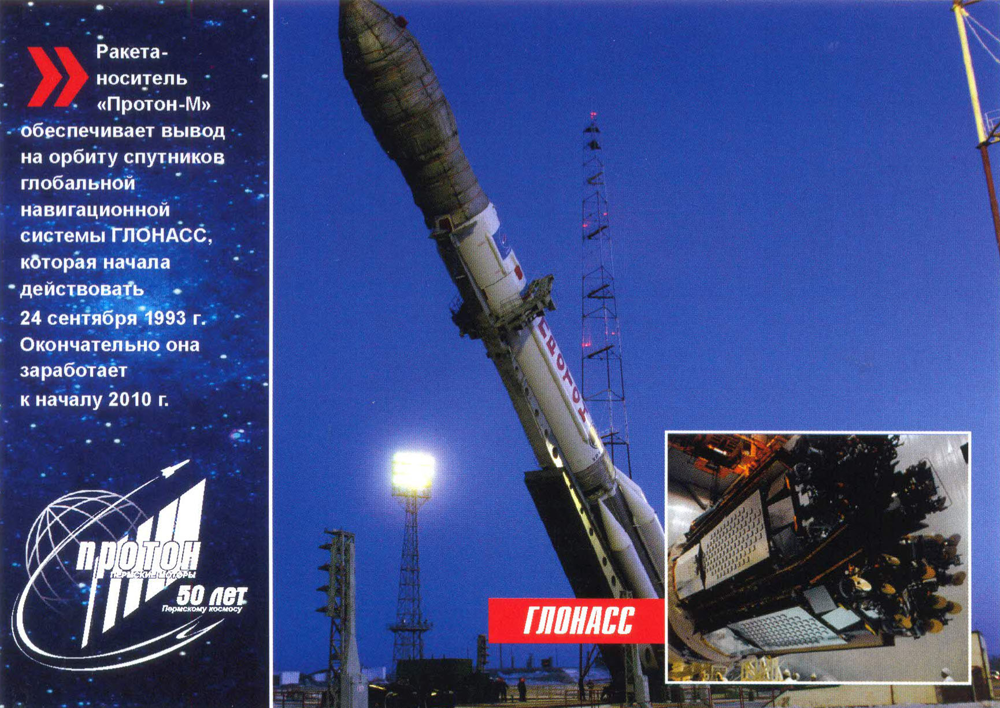

Серия автоматических станций "ЛУНА"
«Луна» - название серии советских межпланетных станций для изучения Луны и космического пространства. Запуск космических кораблей советской серии «Луна» начался с 1958 г., все запуски осуществлялись с космодрома Байконур. Первая станция «Луна-1» представляла собой герметический сферический контейнер, на верхней полусфере которого располагались четыре антенны радиопере¬датчика. Внутри контейнера была установлена научная аппаратура. Полет первой космической станции доказал возможность полетов на другие небесные тела, про¬ведения научных измерений на больших расстояниях от Земли. «Луна-2» стартовала 12 сентября 1959 г. и доставила на поверхность Луны вымпел с изображением Герба СССР. Важным этапом изучения спутника Земли стало фотографирование его поверхности, которое провела автоматическая стан¬ция «Луна-3». Она была выведена на траекторию вокруг Луны 4 октября 1959 г. С каждым разом научная программа автоматических лунных станций станови¬лась все сложнее и насыщеннее. «Луна-5,6,7 и 8» выполнили комплекс работ по подготовке посадки на Луну. «Луна-9», стартовавшая 31 января 1966 г., стала первым в истории космонавтики автоматическим аппаратом, совершившим мягкую посадку на поверхность спутника Земли. Первым искусственным СПУТНИКОМ ЛУНЫ стала автоматическая станция пол номером десять, выведенная на орбиту РН "Протон" 31 марта 1966г.
Исследование Марса
Первая автоматическая станция для исследования марса стартовала осенью 1962 г. «Марс-1» сблизился с планетой 21 марта 1963 г. Через два года, 30 сентября 1970 г., к Марсу стартовал «Зонд-2». В мае 1971 г. РН «Протон» вывела на орбиту друг за другом сразу две межпланетные станции: «Марс-2» и «Марс-3». Их полет к Красной планете продолжался более полугода. 27 ноября 1971 г. они вышли на орбиту Марса, а 2 декабря от станции «Марс-3» был отделен спускаемый аппарат, который совершил мягкую посадку на поверх¬ность планеты. Через 1,5 минуты после посадки станция была приведена в рабочее состояние и начала передавать на Землю видеосигналы. В июле - августе 1973 г. к Марсу стартовали еще четыре межпланетных стан-ции, вошедшие в историю как «марсианский квартет». Вторая большая программа исследования Марса была осуществлена в 1988 г. 7 и 12 июля четырехступенчатые РН «Протон» вывели на траекторию полета к Марсу автоматические межпланетные станции «Фобос-1» и «Фобос-2». Общая продолжительность выполнения проекта должна была составлять 460 суток, пере¬лет по трассе «Земля-Марс» - 200 суток. К сожалению, один из аппаратов был потерян на этапе перелета к Марсу. Второй сумел выйти на орбиту Красной плане¬ты и выполнил часть научной программы, но потом также был потерян. Следующий российский аппарат для исследования Марса и его спутников «Фо- бос-грунт» планируется запустить В 2009 г. Основной целью его будет являться доставка на землю образца грунта с Фобоса.
Серия автоматических станций "ЗОНД"
Важная роль в исследовании Луны принадлежит автоматическим станциям под общим названием «Зонд». Первая автоматическая станция «Зонд-1» была запущена в апреле 1964 г., 30 ноября того же года был осуществлен запуск космической многоступенчатой РН «Протон» со станцией «Зонд-2». Важной особенностью «Зонда-2» было испытание впервые в условиях реального полета плазменных двигателей. Запуском «Зонда-З» было практически завершено фотографирование обратной стороны Луны. При полете станции «Зонд-4», которую вывела на орбиту 2 марта 1968 г. РН «Протон-К» с разгонным блоком «Д», проводилась разведка дальних областей околоземного пространства. Особо важная роль принадлежит «Зондам» в отработке системы возвращения на Землю космических аппаратов. 14 сентября 1968 г. в космос на беспилотном космическом корабле «Зонд-5» были отправлены живые существа: черепахи, плодовые мушки, черви, растения, бактерии. 18 сентября 1968 г. «Зонд-5» совершил облет Луны, пройдя на минимальном расстоянии от ее поверхности -1960 километ-ров. 21 сентября спускаемый аппарат «Зонда-5» приводнился в Индийском океане. Он стал первым в мире кораблем, который, облетев Луну, успешно возвратился на Землю. Важное значение имела и программа исследований аппарата «Зонд-6». «Зонд-7», который был запущен 8 августа 1969 г.,сделал цветные панорамные снимки Земли и Луны. С аппарата "Зонд-8" проводилась телевизионная съемка Земли из космоса. Земли из космоса.
Станция "Алмаз"/"Салют-1,2"
Космический комплекс «Алмаз» создавался по заказу Министерства Обороны СССР. Его целью был сбор радиотехнической и видовой разведывательной инфор-мации, ее обработка экипажем и последующая передача на Землю. Станции долж¬ны были работать не только в пилотируемом, но и в автоматическом режиме. Воплощение проекта было поручено заводу им. М. В. Хруничева, который в 1969 г. приступил к разработке и строительству станции «Алмаз» и транспортных кораблей снабжения. К началу 1970 г. были построены корпуса восьми стендовых и двух летных орбитальных станций. Однако комплектация приборами и системами, полномас-штабная наземная отработка и их изготовление затягивались. Тогда руководством страны было принято решение на базе «Алмаза» создать орбитальные станции «Салют». Первая в мире долговременная орбитальная станция «Салют» была выведена на орбиту РН «Протон» 19 апреля 1971 г. Этот день принято считать днем рождения орбитальных станций. Станция приняла два экипажа, а затем в беспилотном режиме функционировала до 11 октября 1971 г., когда была затоплена. Создание станции «Алмаз» в дальнейшем продолжилось. Первый запуск был произведен 3 апреля 1973 г. Станции было присвоено наименование «Салют-2». Корпуса еще двух станций «Алмаз» были переоборудованы в автоматические космические аппараты радиолокационного наблюдения Земли. Первый под именем «Космос-1870» был запущен РН «Протон» 25 июля 1987 г., другой - «Алмазо-успешно работал с 31 марта 1991 г. до 17 ноября 1992 г., передавая фотографии с разрешением около 10 м.
Доставка лунного груза
12 сентября 1970 г. с космодрома Байконур был осуществлен пуск ракеты-носителя «Протон-К», которая вывела на траекторию полета кЛуне автоматичес-кую межпланетную станцию «Луна-16». Ей предстояло впервые доставить на Зем¬лю лунный грунт для исследования. 20 сентября «Луна-16» совершила мягкую посадку на Луну в районе бухты Изобилия и начала бурение лунного грунта. Весь процесс бурения проводился автоматически. 21 сентября 1970 г. возвращаемый аппарат «Луна-16» стартовал с поверхности Луны с капсулами, в которых находились образцы грунта. 24 сентября аппарат вернулся на Землю. Образцы лунного грунта представляли собой мелкозернистое вещество с кусочками горных пород и минералов темно-серого цвета. Вещество легко слипа-лось, образуя комочки. В его составе ученые определили около 70 веществ. Следующий образец лунного грунта доставила автоматическая станция «Луна- 20», которая совершила мягкую посадку на поверхность спутника Земли 21 фев¬раля 1972 г. Она взяла породу с высокогорного материкового плато Луны. Ис¬следование показало большое отличие образцов, доставленных «Луной-16» и «Луной-20». Еще один образец доставила станция «Луна-24», возвращаемый аппарат которой вернулся на Землю 22 августа 1976 г. В нем находился грунт с двухметровой глубины Моря Кризисов.
Луноход-1,2
10 ноября 1970 г. РИ «Протон-К» вывела на траекторию полета к Луне автомати¬ческую межпланетную станцию «Луна-17» с самоходным аппаратом «Луноход-1» на борту. Этот аппарат был спроектирован и построен на заводе им. С. А. Лавочки¬на под руководством Главного конструктора Г. И. Бабакина, а его ходовая часть - 8 колес с отдельным для каждого двигателем, спрятанным внутри оси, - в Ленин¬градском институте транспортного машиностроения «ВНИИТрансМаш». Через семь дней после старта «Луна-17» совершила мягкую посадку на Луну. «Луноход-1» по трапу сошел с посадочной платформы. «Луноход-1» проработал 10 месяцев, или 11 лунных дней. Он прошел 10,5 км и выполнил исследования грунта более чем в 500 точках. На Землю им было пере¬дано более 200 детальных панорамных изображений лунных ландшафтов. 8 января 1973 г. на Луну был доставлен «Луноход-2». За 4 месяца он проехал по Луне 37 км. С его помощью было получено 86 детальных телепанорам местно¬сти, а также более 80 тыс. телеснимков. «Луноход-2» передвигался гораздо быстрее своего старшего брата и был обору¬дован скоростной ТВ-камерой. Исследователи решили въехать прямо внутрь свежего, окруженного полем камней лунного кратера. Грунт внутри кратера оказался рыхлым, и луноход долго буксовал, пока задним ходом не выбрался на поверхность. Откинутая назад крышка с солнечной батареей, видимо, зачерпнула немного грунта с вала, который попал на верхнюю поверхность лунохода и стал теплоизолятором, что во время лунного дня привело к перегреву аппараратуры.
Орбитальная станция "Салют-6"
Новым словом в космической технике явилось создание долговременных ор-битальных станций. Орбитальная станция «Салют» была запущена РН «Про¬тон» 19 апреля 1971 г. Она была станцией нового поколения. Новизна состояла в том, что у нее был второй стыковочный агрегат, который позволял дозаправлять стан¬цию топливом, производить смену экипажа при постоянном пилотировании. Успешный запуск станции «Салют-6» был осуществлен РН «Протон» 29 сен¬тября 1977 г. В ходе полета первой долговременной орбитальной станции третьего поколения «Салют-6», продолжавшегося почти пять лет, на ней было проведено более 1550 экспериментальных исследований, с использованием свыше 150 наи¬менований научных приборов суммарной массой более 2200 кг. К станции совер¬шили полеты пять основных экспедиций и одиннадцать экспедиций посещения. В1978 г. было положено начало широкой международной интеграции по выпол-нению совместных космических программ. На «Салюте-6» побывали космонавты из Чехословакии, Польши, Германии, Болгарии, Венгрии, Монголии, Вьетнама, Ру¬мынии, Кубы. Для станции «Салют-6» был создан новый транспортный корабль «Космос-1267», способный с помощью РН «Протон» выносить на орбиту значительно большую мас¬су груза и снабженный возвращаемым аппаратом. Он успешно стартовал 25 апре¬ля 1981 г. 29 ИЮЛЯ 1982 г. орбитальная станция выполнила свою программу полета и прекратила существование.
Космические аппараты "Венера"
Серия советских межпланетных космических аппаратов для изучения плане-ты Венеры и космического пространства состояла из нескольких аппаратов. Наи¬более значительными были программы «Венеры-9» и «Венеры-10». Они были запущены 8 и 14 июня 1975 г. с помощью РН «Протон». За двое суток до подлета к Венере от этих космических станций были отделены спускаемые аппараты, которые 22 и 25 октября 1975 г. совершили мягкую посад¬ку на невидимую в это время с Земли сторону Венеры. Программу исследований продолжили аппараты «Венера-12» и «Венера-11», которые были запущены РН «Протон» 9 и 14 сентября 1978 г. Приборы, установ¬ленные на аппаратах, предназначались для изучения гамма-излучения Солнца и Галактики. 19 декабря «Венера-12» достигла окрестностей планеты Венера. От орбитального модуля был отделен спускаемый аппарат, который 21 декабря во¬шел в атмосферу Венеры, а 25 декабря 1978 г. совершил мягкую посадку на поверхность Венеры. Орбитальный модуль «Венеры-12» пролетел мимо голубой планеты на расстоянии 34 000 км и затем вышел на гелиоцентрическую орбиту. 13 февраля он обследовал комету Бредфилда. Старт межпланетной станции «Венера-16» был осуществлен 7 июня 1983 г. по традиции, в паре с идентичной станцией «Венера-15». Цель запуска - радиолокационное картографирование поверхности планеты Венеры. С помощью «Венеры-15» И «Венеры-16» было получено радиолакационное изображение 25 процентов поверхности планеты "Венера".
Транспортные корабли "Космос"
Чтобы обеспечить работоспособность станций «Салют» и «Мир» требовалось решить проблему автоматической стыковки и расстыковки беспилотных космических аппаратов. Впервые в мире это удалось сделать кораблям «Космос-186» и «Космос-188», которые были запущены с помощью РН «Протон-К». В 1981 г. был запущен универсальный транспортный корабль снабжения «Космос-1267», который состыковался со станцией «Салют-6», в результате чего был собран орбитальный комплекс массой 40 тонн. Затем последовала серия аналогичных аппаратов («Космос-1443» и «Космос-1686»), способных функционировать как космические грузовики, мощные межорбитальные буксиры и специализированные модули. В 1983 г РН «Протон-К» был осуществлен вывод на орбиту тяжелого транспортного корабля «Космос-1443», вес и габариты которого были сравнимы со станцией «Салют-7», к которой он пристыковался. Это позволило впервые отработать метод управления комплексами больших габаритов и масс. Транспортный корабль располагал совершенной системой управления, имел большие запасы топлива и собственную энергетику, включающую солнечные батареи мощностью около 3 киловатт - составленные из фотоэлементов «крылья» размахом 16 метров и общей площадью 40 квадратных метров. «Космос-1443» доставил на орбиту груз общим весом 3 тонны, а его возвращаемый отсек большой грузоподъемности впервые доставил на Землю около 350 килограммов грузов.
Орбитальная станция "Салют-7"

19 апреля 1982 г. РН «Протон» вывела на орбиту космическую станцию второ¬го поколения «Салют-7»_ От своей предшественницы она отличалась тем, что была более комфортна для космонавтов. По просьбе членов экипажей, работавших на «Салюте-6», конструкторами было внесено более 400 изменений. Также на стан¬ции были установлены дополнительные солнечные батареи. На орбитальной станции «Салют-7» работали четыре основных экипажа и пять экспедиций посещения, две из которых были международные (Франция, Индия). Экипажи всех экспедиций выполнили большой объем научных исследований в самых различных областях. Кроме того, космонавты провели различные экспе¬рименты в открытом космосе. С борта станции «Салют-7» совершила первый в истории выход в космос женщина-космонавт - С. Савицкая. Полет «Салюта-7» оказался трудным и трагическим. Во время работы станции случилось несколько серьезных аварий. А 22 июля 1986 г. при попытке подъема станции на более высокую орбиту из-за повышения солнечной активности «Салют-7» начал резко «падать». Станцию пришлось вывести с орбиты. 7 февраля 1991 г она прекратила свое существование. Всего при эксплуатации орбитальных космических станций «Салют» и «Мир» в космосе побывали космонавты 17 стран: Чехословакии, Польши, Болгарии, Венг¬рии, Вьетнама, Кубы, Монголии, Румынии, Франции, Индии, Сирии, Афганистана, Японии, Великобритании, Казахстана, Австрии, Германии.
Проект "Вега"
Проект «Вега» (аббревиатура слов «Венера» и «Галлея») был одним из самых сложных в истории исследований Солнечной системы. Он состоял из трех частей: изучение атмосферы и поверхности Венеры при помощи посадочных аппаратов, изучение динамики атмосферы Венеры посредством аэростатных зондов, пролет через газопылевую атмосферу и плазменную оболочку кометы Галлея. Проект был осуществлен при широкой международной кооперации. Советские автоматические межпланетные станции (АМС) «Вега-1» и «Вега-2» стартовали 15 и 21 декабря 1984 г. с помощью РН «Протон». АМС и комета Гал-лея двигались на встречных курсах, и скорость сближения превышала 70 км/с. Встреча «Вега-1 » с кометой произошла 6 марта, а «Веги-2» -9 марта 1986 г. «Веги» передали около 1500 снимков внутренних областей кометы Галлея и ее ядра, информацию о пылевой обстановке внутри кометы, характеристиках плазмы, изме-рили темп испарения льдов и другие данные. Были впервые получены изображения ядра кометы. Через 6 месяцев полета аппараты «Вега-1 » и «Вега-2» приблизились к Венере. От них были отделены спускаемые аппараты, которые при входе в атмосфе-ру разделились на посадочные модули и аэростатные зонды. Модули совершили мягкую посадку на ночную сторону Венеры в районе равнины Русалки. Аэростатные зонды произвели снижение на парашютах и после наполнения их оболочек гелием начали дрейф в атмосфере планеты на высоте 50-60 км, проводя измерения метеорологических параметров. Аэростатный эксперимент позволил по-лучить новую, уникальную информацию об атмосфере планеты.
Орбитальная станция "Мир"
Создание первого в истории человечества многофункционального орбитально-го комплекса - станции «Мир» - началось 20 февраля 1986 г. с вывода РН «Протон» базового блока станции. В дальнейшем к нему были пристыкованы модули «Квант» (31 марта 1987 г ), «Квант-2» (26 ноября 1989 г.), «Кристалл» (31 мая 1990 г ), «Спектр» (20 мая 1995 г) и «Природа» (23 апреля 1996 г ). Все модули были доставлены ракетой-носителем «Протон». С 1995 г орбитальную станцию «Мир» стали посещать иностранные экипажи. На станции побывало 14 международных экспедиций с участием космонавтов Сирии, Болгарии, Афганистана, Франции (пять раз), Японии, Великобритании, Австрии, Гер-мании (два раза). В рамках программы «Мир-Шаттл» было осуществлено семь крат-ковременных экспедиций посещения с помощью корабля «Атлантис» и одна с по-мощью корабля «Индевор», во время которых на станции побывали 34 астронавта. В конце 90-х на станции начались многочисленные проблемы с выходом из строя различных приборов и систем. Через некоторое время правительство РФ, несмотря на многочисленные проекты спасения станции, приняло решение зато-пить «Мир». 23 марта 2001 г. проработавшая в три раза дольше первоначально установленного срока станция была затоплена в южной части Тихого океана. На станции работали 104 космонавта и астронавта из 12 стран. В. Поляков устано-вил на ней рекорд непрерывного пребывания в космосе - 438 суток, а Ш. Лусид -рекорддлительности космического полета среди женщин (188 суток).
Навигационная система ГЛОНАСС
Отечественная глобальная навигационная система ГЛОНАСС, обеспечивающая решение задач в интересах обороны и безопасности Росийской Федерации, вве-дена в эксплуатацию 24 сентября 1993 г. с орбитальной группировкой ограничен-ного состава (12 навигационных космических аппаратов). Первый спутник ГЛОНАСС был выведен Советским Союзом на орбиту 12 ок-тября 1982 г. В декабре 1995 г. орбитальная группировка развернута до штатного состава (24 КА). Все они выводились на орбиту РН «Протон-М». ГЛОНАСС - система двойного использования, обеспечивающая решение задач Министерства Обороны РФ и гражданских потребителей: оперативное высокоточное навигационно-временное обеспечение неограниченного числа пользователей назем-ного, морского, воздушного и космического базирования спутниковой навигацией. Спутники системы ГЛОНАСС формируют непрерывную навигацию по всей террито-рии Земного шара. При доведении количества спутников до 18 на территории Рос-сии обеспечивается практически 100-процентная непрерывная навигация. С учетом важности решаемых задач деятельность по созданию, развертыва-нию и использованию отечественной глобальной навигационной спутниковой сис-темы регулируется отдельной федеральной целевой программой. По словам Генерального конструктора ГЛОНАСС Юрия Урличича, полное по-крытие территории России планируется уже в начале 2008 г., а глобальных масштабов система достигнет к началу 2010 г.
Международная космическая станция
Строительство Международной космической станции (МКС) началось в 1998 г 20 ноября ракетой-носителем «Протон» был выведен на орбиту первый блок «Заря» - важнейший модуль, который обеспечивает объединение российских и американс-ких сегментов станции. Впервые в ГКНПЦ им. М. В. Хруничева космический аппарат разрабатывался по техническому заданию американской стороны и по совместным российско-американским стандартам. Контрольный модуль «Заря», известный также как функционально-грузовой блок (ФГБ), был первым российским компонентом МКС. Он был создан для энергоснаб-жения и маневров станции на орбите. «Заря» также в первое время выполняла функции контроля ориентации, связи, энергоснабжения. 7 декабря 1998 г к «Заре» с помощью управляемого манипулятора американ-ского корабля многоразового использования «Индевор» был пристыкован амери-канский модуль МООЕ 1 «Юнити». Экипаж корабля «Индевор» выполнил на ФГБ монтаж аппаратуры связи и ремонтные работы. От успешности запуска на орбиту первого модуля зависели не только сроки развертывания Международной космической станции, но и перспективы проекта в целом. ФГБ достойно справился со своей задачей: в течение 613 суток (но полго-да больше запланированного) обеспечивал все жизненно важные функции МКС. 12 июля 2000 г. РН «Протон» вывела на орбиту второй российский служебный модуль «Звезда». 26 июля 2000 г. была осуществлена стыковка служебного модуля «Звезда» с модулями «Заря» - «Юнити».
Международная космическая станция
С началом функционирования на орбите комплекса «Звезда» - «Заря» - «Юни-ти» 20 июля 2000 г. начался этап эксплуатации станции в пилотируемом режиме и проведения на ней научно-технических исследований. Первая экспедиция в составе космонавтов Ю. гидзенко, С. Крикалева и астро-навта У Шеперда была доставлена на орбитальную станцию российским кораблем «Союз ТМ-31» 31 октября 2000 г. Служебный модуль «Звезда» обеспечивает деятельность экипажа численнос-тью до шести человек и управление станцией с регулярно изменяющейся конфи-ryрацией. На этапе развертывания МКС он является базовым модулем всей стан-ции, основным местом для жизни и работы экипажа. Это наиболее сложный и на-сыщенный аппаратурой российский модуль МКС. Масса МКС сегодня составляет 178 тонн, а к окончанию строительства она до-стигнет 470 тонн. В состав российского сегмента входят блоки: «Заря», «Звезда», стыковочный отсек «Пирс», пилотируемые корабли «Союз ТМА» и грузовой «Про-гресс М1 ». Следующим российским блоком должен стать упрощенный универ-сальный стыковочный модуль (УУСМ), создаваемый на базе модуля - дублера ФГБ-2. Американский сегмент включает модули «Unity» ,«Destiny» и шлюзовую камеру «Quest». В настоящее время ведутся работы по созданию еще одного элемента российского сегмента МКС - многоцелевого лабораторного модуля на базе ФГБ-2.
Ракета-носитель "Протон-М"
Ракета-носитель тяжелого класса «Протон-М» - модернизированный вариант ракеты «Протон», которая считается одной из самых надежных пусковых систем в мире. Ее летная история продолжается свыше 40 лет. Первый запуск носителя «Протон-М» состоялся 7 апреля 2001 г. Внешние габариты ракеты остались практически неизменными, однако показа-тели по энергетическим, экологическим и эксплуатационным характеристикам пре-восходят аналогичные показатели РН «Протон-К». Увеличен объем, предоставля-емый для размещения полезной нагрузки, двигатели первой ступени «Протона-М» получили повышенную на 7 процентов удельную тягу. Новая ракета-носитель так-же оснащена цифровой навигационной системой, что расширило возможности по доставке спутников на орбиту. В отличие от выпускаемых прежде ракет-носителей, на которые устанавливал-ся в качестве четвертой ступени только блок «ДМ», на «Протон-М» устанавливает-ся разгонный блок «Бриз М». Модернизированный носитель вместе с новой чет-вертой ступенью позволяет выводить на орбиту около 5,5 т полезной нагрузки, что гiримерно на 1,5 т больше, чем раньше. Разгонные блоки блоки «ДМ» и «Бриз М», в частности, используются для запуска спутников ГЛОНАСС и ГЛОНАСС-М. В 2007 г. с помощью модифицированных двигателей первой ступени, выпу-щенных в ОАО «Протон-ПМ», был осуществлен запуск на орбиту тяжелого американского спутника весом около 6 тонн.